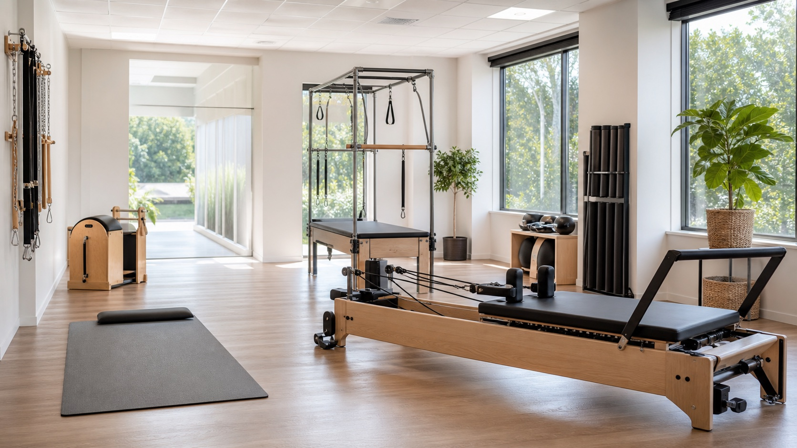

Pilates
Apresentacao clara para quem procura aulas, acompanhamento ou uma rotina de movimento.
Pilates, fisio e movimento em Mata da Praia
Este exemplo mostra como a Movix poderia ter um link proprio para reunir informacoes essenciais: pilates, fisioterapia, personal, treino funcional, localizacao e WhatsApp.

A ideia nao e substituir o Instagram. A pagina funciona como um ponto fixo para quem vem de indicacao, Google, bio ou conversa pelo WhatsApp e precisa entender rapido o que o estudio oferece.
Servicos organizados
Os itens abaixo usam apenas informacoes permitidas no brief. Modalidades, horarios, equipe e detalhes tecnicos entram depois de confirmacao da Movix.
Apresentacao clara para quem procura aulas, acompanhamento ou uma rotina de movimento.
Servico citado de forma segura, com texto cuidadoso e sem alegacoes clinicas.
Espaco para explicar o atendimento individual ou orientado, depois de validar os detalhes.
Bloco simples para organizar o interesse antes da conversa pelo WhatsApp.
Onde a pagina entra
A pagina pode ser usada como link na bio, link em mensagens, apoio para quem chega por indicacao ou referencia em buscadores. Ela centraliza a informacao sem virar um site grande.
O aluno abre o link e entende o que a Movix reune no mesmo lugar.
Ele confere regiao, servicos principais e caminho de contato.
A conversa continua no WhatsApp para confirmar horario, disponibilidade e detalhes.
Localizacao
Endereco publico observado: Ed. Concorde, Av. Adalberto Simao Nader, 387, sala 209, Mata da Praia, Vitoria/ES. Antes de publicar como oficial, a Movix deve confirmar o formato exato do endereco.
Av. Adalberto Simao Nader, 387, sala 209
Mata da Praia, Vitoria/ES
Informacoes uteis
Nome, segmento, regiao e contato aparecem logo no inicio, sem depender de posts antigos.
O que e publico entra na pagina. O que ainda precisa de validacao fica fora ou marcado como a confirmar.
Uma pagina objetiva, sem blog, area administrativa, promessa de resultado ou sistema de agendamento proprio.
Conceito visual
Antes de virar site oficial, os textos, servicos, endereco, horarios e imagens autorizadas precisam ser confirmados pelo negocio.